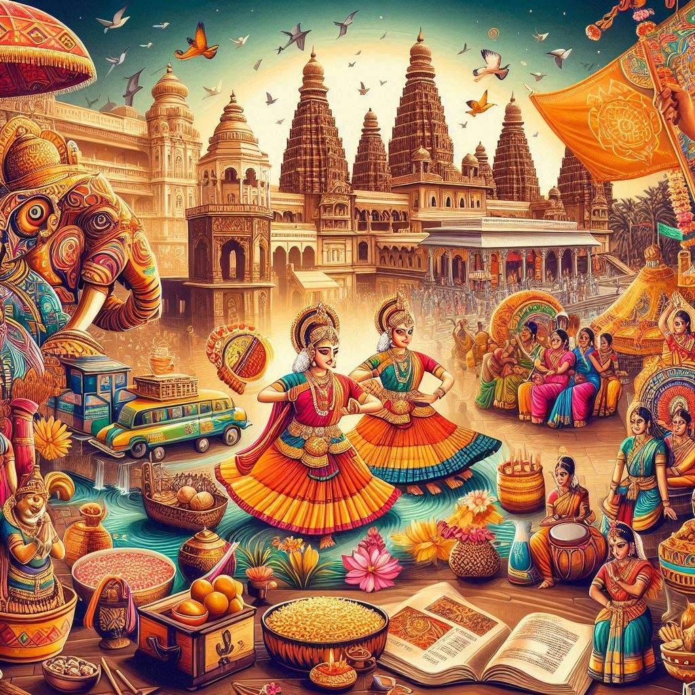
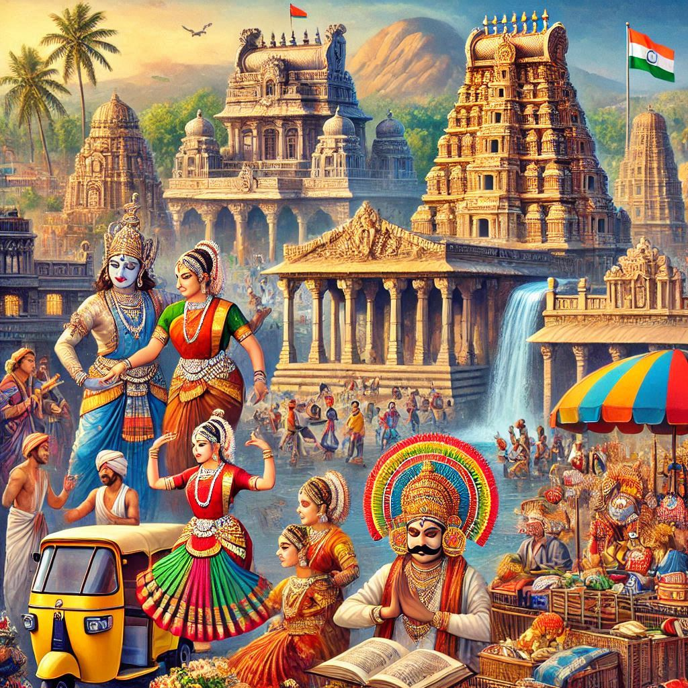

Culture of Karnataka:
Karnataka, located in the southern part of India, boasts a rich and diverse cultural heritage that spans centuries, influenced by various dynasties, religions, and traditions. The state's culture is a harmonious blend of Hindu, Muslim, and Christian influences, reflecting its history, art, literature, dance, music, and cuisine.
1. Language:
The official language of Karnataka is Kannada, a Dravidian language with a rich literary tradition. It has a classical status and is spoken by the majority of the population. In addition to Kannada, Tulu, Konkani, and Urdu are also spoken by various communities in different regions of the state. English is widely understood and used, especially in urban areas.
2. Festivals and Celebrations:
- Dasara (or Dussehra) is the most famous and grand festival celebrated in Karnataka, especially in Mysuru. It marks the victory of good over evil and is known for its vibrant processions, cultural performances, and the display of royal grandeur.
- Ugadi, the Kannada New Year, is celebrated with much enthusiasm across the state, with people wearing new clothes, preparing special dishes, and engaging in family gatherings.
- Karaga is another significant festival celebrated in Bengaluru and surrounding areas, where people carry decorated pots in a procession as an offering to the goddess.
- Deepavali (Diwali), Makara Sankranti, Hampi Utsav, and Ramzan are also widely celebrated, with local variations in rituals and celebrations.
3. Art and Architecture:
- Hampi and Badami are famous for their ancient temples and ruins, showcasing Chalukya and Vijayanagara architectural styles, with intricate carvings and grand structures.
- Karnataka is known for its temple architecture, with notable temples such as Sri Chamarajendra Park (Cubbon Park), Ramanathaswamy Temple, and Virupaksha Temple.
- Traditional art forms such as Mysore Painting, Channapatna toys, Bidriware (metalwork), and Karnataka Kalamkari (hand-painted cloth) reflect the state's artistic legacy.
4. Dance and Music:
- Karnataka has a rich tradition of classical music and dance. The state is the birthplace of the famous Carnatic music, with legendary composers like Purandara Dasa and Vidhyarthi Bhaskara contributing to its development.
- Yakshagana, a folk dance-drama form, is a popular theatrical performance in coastal Karnataka, known for its vibrant costumes, music, and storytelling.
- Other folk dances like Dollu Kunitha and Kamsale are performed during festivals and cultural events.
- The state also has a strong tradition of theater, and puppet shows are an important part of its folk culture.
5. Cuisine:
Karnataka's cuisine is as diverse as its culture, offering a wide range of dishes based on the geography of the region. The cuisine is typically a mix of spicy, sweet, and tangy flavors, with a significant use of rice, pulses, coconut, and jaggery.
- Bisi Bele Bath, Ragi Mudde, Mysore Pak, Dosa, Idli, Vada, Akki Roti, Neer Dosa, and Mangalore Buns are some of the staple dishes.
- The coastal regions, especially around Mangalore and Udupi, are famous for their seafood dishes such as Fish Curry, Prawn Sukka, and Kori Rotti.
- The use of sambar, rasam, and chutneys adds a unique flavor to the food.


6. Literature:
Karnataka has a rich literary tradition in Kannada. The state produced many great poets, writers, and philosophers, with Kuvempu, R. K. Narayan, Bendre, and Shivaram Karanth among the most prominent names. Vachanas and Bhakti poetry were key in spreading religious and philosophical teachings in Karnataka, especially through the Veerashaiva movement led by Basava. Kannada literature has evolved over centuries, with influences from different dynasties, including the Vijayanagara and Chola periods.
7. Crafts and Handicrafts:
- Mysore Silk is famous worldwide, and Karnataka Silk Sarees are a symbol of elegance.
- Channapatna Toys are wooden toys that are a traditional craft of the region, known for their vibrant colors and designs.
- Bidriware, Lakkha (lac) work, and Wooden Craft are other traditional arts that are still practiced in the state.
8. Architecture:
- Karnataka is home to several historical sites, including the ruins of Hampi, a UNESCO World Heritage Site, which showcases the grandeur of the Vijayanagara Empire.
- Bangalore Palace, with its Tudor-style architecture, and the Gol Gumbaz in Bijapur (known for its architectural acoustics) are prime examples of Karnataka's diverse architectural legacy.
9. Sports:
Karnataka has a strong sporting culture, with cricket, football, and Kabbadi being the most popular sports. Bangalore, being a hub for Indian Premier League (IPL) cricket, hosts many passionate fans and events. Kabaddi is also widely played, and Hockey has a historical significance in the state.
Conclusion:
The culture of Karnataka is a beautiful blend of tradition, history, and modernity. From its language, festivals, art, architecture, to its cuisine and music, the state offers a diverse cultural experience that captivates the heart and soul of every visitor.